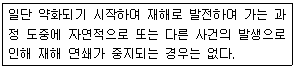
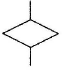
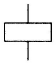
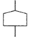
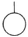
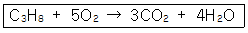
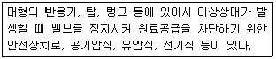
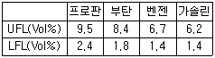
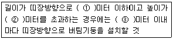
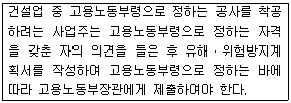

산업안전기사 (2011-06-12 기출문제)
1과목: 안전관리론
1. 다음 중 적성요인에 있어 직업적성을 검사하는 항목이 아닌 것은?
- 지능
- 촉각 적응력
- 형태식별능력
- 운동속도
(정답률: 65%)

2. 다음 중 산업안전보건법상 “중대재해”에 속하지 않는 것은?
- 1명의 사망자가 발생한 재해
- 1개월의 요양을 요하는 부상자가 5명 발생한 재해
- 3개월의 요양을 요하는 부상자가 동시에 3명 발생한 재해
- 10명의 직업성질병자가 동시에 발생한 재해
(정답률: 72%)
3. 파블로프(Pavlov)의 조건반사설에 의한 학습이론의 원리가 아닌 것은?
- 준비성의 원리
- 일관성의 원리
- 계속성의 원리
- 강도의 원리
(정답률: 50%)
4. 다음 중 재해발생시 조치사항에 있어 가장 우선적으로 실시해야 하는 것은?
- 재해자의 응급조치
- 재해조사
- 원인강구
- 대책수립
(정답률: 89%)
5. 산업안전보건법에 따른 사업 내 안전ㆍ보건교육에서 관리 감독자의 정기안전ㆍ보건교육의 내용에 해당하지 않는 것은?
- 유해ㆍ위험 작업환경 관리에 관한 사항
- 표준안전작업방법 및 지도 요령에 관한 사항
- 정리정돈 및 청소에 관한 사항
- 작업공정의 유해ㆍ위험과 재해 예방대책에 관한 사항
(정답률: 80%)
6. 산업안전보건법에 따라 자율검사프로그램을 인정받기 위한 충족 요건으로 틀린 것은?(오류 신고가 접수된 문제입니다. 반드시 정답과 해설을 확인하시기 바랍니다.)
- 관련 법에 따른 검사원을 고용하고 있을 것
- 관련 법에 따른 검사 주기마다 검사를 할 것
- 자율검사프로그램의 검사기준이 안전검사기준에 충족할 것
- 검사를 할 수 있는 장비를 갖추고 이를 유지ㆍ관리할수 있을 것
(정답률: 63%)
7. 다음 중 레빈의 법칙 “B = f( PㆍE )”에서 “B"에 해당 되는 것은?
- 인간관계
- 행동
- 환경
- 함수
(정답률: 85%)
8. 안전인증 대상 보호구인 방독마스크에서 유기화합물용 정화통 외부 측면의 표시 색으로 옳은 것은?
- 갈색
- 노랑색
- 녹색
- 백색과 녹색
(정답률: 70%)
9. 안전보건관리조직 라인-스탭(Line-Staff) 조직에 관한 설명으로 틀린 것은?
- 조직원 전원을 자율적으로 안전 활동에 참여시킬 수 있다.
- 라인의 관리, 감독자에게도 안전에 관한 책임과 권한이 부여된다.
- 중규모 사업장(100명 이상~500명 미만)에 적합하다.
- 안전 활동과 생산업무가 유리될 우려가 없기 때문에 균형을 유지할 수 있어 이상적인 조직형태이다.
(정답률: 83%)
10. 다음 중 교육방법의 4단계를 올바르게 나열한 것은?
- 제시 → 도입 → 적용 → 확인
- 제시 → 확인 → 도입 → 적용
- 도입 → 확인 → 적용 → 제시
- 도입 → 제시 → 적용 → 확인
(정답률: 72%)
11. 다음 중 몇 사람의 전문가에 의하여 과제에 관한 견해를 발표한 뒤에 참가자로 하여금 의견이나 질문을 하게 하여 토의하는 방법은?
- 패널 디스커션(panel discussion)
- 케이스 스터디(case study)
- 심포지엄(symposium)
- 포럼(forum)
(정답률: 82%)
12. 시몬즈(Simonds) 방식의 재해손실비 산정에 있어 비보험코스트에 해당하지 않는 것은?
- 소송관계 비용
- 신규작업자의 교육훈련비
- 부상자의 직장 복귀 후 생산감소로 인한 임금비용
- 업무상의 사유로 부상을 당하여 근로자에게 지급하는 요양급여
(정답률: 61%)
13. 다음 중 맥그리거(McGregor)의 Y이론과 관계가 없는 것은?
- 직무확장
- 인간관계 관리방식
- 권위주의적 리더십
- 책임과 창조력
(정답률: 81%)
14. 다음 중 위험예지훈련의 문제해결 4라운드에 속하지 않는 것은?
- 현상파악
- 본질추구
- 대책수립
- 원인결정
(정답률: 80%)
15. 안전ㆍ보건표지 중 안내표지의 사용 사례로 옳은 것은?
- 특정행위의 지시
- 비상구의 표시
- 유해 행위의 금지
- 기계 방호물의 표시
(정답률: 81%)
16. 강도율 5인 사업장에서 한 작업자가 평생 동안 작업을 한다면 산업재해로 인하여 근로손실을 당하는 일수는 며칠로 추정되겠는가? (단, 한 작업자의 평생근로시간은 100000시간으로 가정 한다.)
- 450
- 500
- 550
- 600
(정답률: 76%)
17. 다음 중 산소결핍이 예상되는 맨홀 내에서 작업을 실시할 때 사고 방지 대책으로 적절하지 않는 것은?
- 작업 시작 전 및 작업 중 충분한 환기 실시
- 작업 장소의 입장 및 퇴장시 인원점검
- 방독마스크의 보급과 착용 철저
- 작업장과 외부와의 상시 연락을 위한 설비 설치
(정답률: 86%)
18. 피로(fatigue)의 측정 방법 중 생리적 방법의 검사항목에 포함되지 않는 것은?
- 근력, 근활동
- 대뇌피질 활동
- 전신자각 증상
- 호흡 순환기능
(정답률: 48%)
19. 다음 중 재해발생에 관련된 하인리히의 도미노 이론을 올바르게 나열한 것은?
- 개인적 결함 → 사회적 환경 및 유전적 요소 → 불안전한 행동 및 불안전한 상태 → 사고 → 재해
- 사회적 환경 및 유전적 요소 → 개인적 결함 → 불안전한 행동 및 불안전한 상태 → 사고 → 재해
- 사회적 환경 및 유전적 요소 → 불안전한 행동 및 불안전한 상태 → 개인적 결함 → 재해 → 사고
- 개인적 결함 → 사회적 환경 및 유전적 요소 → 불안전한 행동 및 불안전한 상태 → 재해 → 사고
(정답률: 63%)
20. 교육훈련기법 중 Off.J.T(Off the Job Training)의 장점에 해당되지 않는 것은?
- 우수한 전문가를 강사로 활용할 수 있다.
- 특별교재, 교구, 시설을 유효하게 활용할 수 있다.
- 다수의 근로자에게 조직적 훈련이 가능하다.
- 직장의 실정에 맞는 구체적이고, 실제적인 교육이 가능하다.
(정답률: 82%)
2과목: 인간공학 및 시스템안전공학
21. 일반적인 조건에서 정량적 표시장치의 두 눈금 사이의 간격은 0.13cm를 추천하고 있다. 다음 중 142cm의 시야 거리에서 가장 적당한 눈금 사이의 간격은 얼마인가?
- 0.065cm
- 0.13cm
- 0.26cm
- 0.39cm
(정답률: 46%)
22. 다음 중 조작상의 과오로 기기의 일부에 고장이 발생하는 경우, 이 부분의 고장으로 인하여 사고가 발생하는 것을 방지하도록 설계하는 방법은?
- 신뢰성 설계
- 페일 세이프(fail safe) 설계
- 풀 프루프(fool proof) 설계
- 사고 방지(accident proof) 설계
(정답률: 58%)
23. 다음 중 인체와 환경 사이에서 발생하는 열교환 작용의 교환경로와 가장 거리가 먼 것은?
- 대류
- 복사
- 증발
- 분자량
(정답률: 74%)
24. 다음 중 신호검출이론(SDT)에서 두 정규분포 곡선이 교차하는 부분에 판별기준이 놓였을 경우 Beta 값으로 옳은 것은?
- Beta = 0
- Beta < 1
- Beta = 1
- Beta > 1
(정답률: 71%)
25. 다음 중 인간공학에 있어 기본적인 가정에 관한 설명으로 틀린 것은?
- 인간에게 적절한 동기부여가 된다면 좀더 나은 성과를 얻게 된다.
- 인간 기능의 효율은 인간-기계 시스템의 효율과 연계 된다.
- 개인이 시스템에서 효과적으로 기능을 하지 못하여도 시스템의 수행은 변함없다.
- 장비, 물건, 환경 특성이 인간의 수행도와 인간-기계시스템의 성과에 영향을 준다.
(정답률: 81%)
26. 다음 중 청각적 자극 제시와 이에 대한 음성응답 과업에서 갖는 양립성에 해당하는 것은?
- 개념적 양립성
- 공간적 양립성
- 운동 양립성
- 양식 양립성
(정답률: 49%)
27. 다음 중 동작경제의 원칙에 있어 신체사용에 관한 원칙이 아닌 것은?
- 두 손의 동작은 같이 시작해서 같이 끝나야 한다.
- 손의 동작은 유연하고 연속적인 동작이여야 한다.
- 공구, 재료 및 제어장치는 사용하기 가까운 곳에 배치해야 한다.
- 동작이 급작스럽게 크게 바뀌는 직선 동작은 피해야 한다.
(정답률: 64%)
28. 다음 중 인간-기계 시스템에서 기계의 표시장치와 인간의 눈은 어느 요소에 해당하는가?
- 감지
- 정보저장
- 정보처리
- 행동기능
(정답률: 82%)
29. 다음 중 청각적 표시장치에 관한 설명으로 적절하지 않은 것은?
- 귀 위치에서 신호의 강도는 110dB과 은폐가청 역치의 중간정도가 적당하다.
- 귀는 순음에 대하여 즉각적으로 반응하므로 순음의 청각적 신호는 0.2초 이내로 지속하면 된다.
- JND(Just Noticeable Difference)가 작을수록 차원의 변화를 쉽게 검출할 수 있다.
- 다차원암호시스템을 사용할 경우 일반적으로 차원의 수가 적고 수준의 수가 많을 때보다 차원의 수가 많고 수준의 수가 적을 때 식별이 수월하다.
(정답률: 46%)
30. 다음 중 FTA에서 시스템이 기능을 살리는데 필요한 최소 요인의 집합을 무엇이라 하는가?
- critical set
- minimal gate
- minimal path
- Boolean indicated cut set
(정답률: 81%)
31. 다음 중 안정성 평가의 기본원칙 6단계 과정에 해당 되지 않는 것은?
- 작업 조건의 분석
- 정성적 평가
- 안전대책
- 관계자료의 정비검토
(정답률: 60%)
32. 다음 중 산업안전보건법에 따른 유해ㆍ위험방지계획서 제출 대상 사업은 기계 및 기구를 제외한 금속가공 제품 제조업으로서 전기사용설비의 정격용량의 합이 얼마 이상인 사업을 말하는가?
- 50kW
- 100kW
- 200kW
- 300kW
(정답률: 79%)
33. 다음 중 기업에서 보전효과 측정을 위해 일반적으로 사용되는 평가요소를 잘못 나타낸 것은?
- 설비고장도수율 =설비가동시간/설비고장건수
- 제품단위당 보전비 =총보전비/제품수량
- 운전 1시간당 보전비 =총보전비/설비운전시간
- 계획공사율 =계획공사공수(工數)/전공수(全工數)
(정답률: 57%)
34. 다음 중 시스템 안전기술관리를 정립하기 위한 절차로 가장 적절한 것은?
- 안전분석 → 안전사양 → 안전설계 → 안전확인
- 안전분석 → 안전사양 → 안전확인 → 안전설계
- 안전사양 → 안전설계 → 안전분석 → 안전확인
- 안전사양 → 안전분석 → 안전확인 → 안전설계
(정답률: 57%)
35. 결함수 작성의 몇 가지 원칙 중 다음 설명에 해당하는 원칙은?

- No-Gate-to-Gate Rule
- No Miracle Rule
- General Rule Ⅰ
- General Rule Ⅱ
(정답률: 60%)
36. 다음 중 FTA(Fault Tree Analysis)에 사용되는 논리 기호와 명칭이 올바르게 연결된 것은?

: 전이기호
: 기본사상
: 통상사항
: 결함사상
(정답률: 76%)
37. 반사율이 60%인 작업 대상물에 대하여 근로자가 검사 작업을 수행할 때 휘도(luminance)가 90fL 이라면 이 작업에서의 소요조명(fc)은 얼마인가?
- 75
- 150
- 200
- 300
(정답률: 73%)
38. 자동차는 타이어가 4개인 하나의 시스템으로 볼 수 있다. 타이어 1개가 파열될 확률이 0.01이라면, 이 자동차의 신뢰도는 약 얼마인가?
- 0.91
- 0.93
- 0.96
- 0.99
(정답률: 61%)
39. 다음 중 인체에서 뼈의 주요 기능이 아닌 것은?
- 인체의 지주
- 장기의 보호
- 골수의 조혈
- 근육의 대사
(정답률: 77%)
40. 다음 중 사고원인 가운데 인간의 과오에 기인된 원인분석, 확률을 계산함으로써 제품의 결함을 감소시키고, 인간 공학적 대책을 수립하는데 사용되는 분석기법은?
- CA
- FMEA
- THERP
- MORT
(정답률: 72%)
3과목: 기계위험방지기술
41. 작업자의 신체부위가 위험한계내로 접근하였을 때 기계적인 작용에 의하여 접근을 못하도록 하는 방호장치는?
- 위치제한형 방호장치
- 접근거부형 방호장치
- 접근반응형 방호장치
- 감지형 방호장치
(정답률: 66%)
42. 롤러기 안전장치의 하나인 복부로 조작하는 급정지장치의 위치로서 가장 적당한 것은?
- 밑면으로부터 1.8m 이내
- 밑면으로부터 2.0m 이내
- 밑면으로부터 0.8m 이상 1.1m 이내
- 밑면으로부터 0.4m 이상 0.6m 이내
(정답률: 79%)
43. 고용노동부장관이 실시하는 공정안전관리 이행수준 평가결과가 우수한 사업장을 제외한 나머지 사업장은 보일러 압력방출장치에 대하여 몇 년마다 1회 이상 토출압력을 시험하여야 하는가?
- 1년
- 2년
- 3년
- 4년
(정답률: 58%)
44. 기계설비의 위험점에서 끼임점(Shear Point)형성에 해당되지 않는 것은?
- 연삭숫돌과 작업대
- 체인과 스프로킷
- 반복동작되는 링크기구
- 교반기의 날개와 몸체사이
(정답률: 41%)
45. 둥근톱 기계의 방호장치에서 분할날과 톱날 원주면과의 거리는 몇 mm 이내로 설치하는가?
- 12mm 이내
- 14mm 이내
- 16mm 이내
- 18mm 이내
(정답률: 68%)
46. 아세틸렌은 매우 타기 쉬운 기체인데 공기 중에서 약 몇 ℃ 부근에서 자연 발화를 하는가?
- 406 ~ 408℃
- 456 ~ 458℃
- 506 ~ 508℃
- 556 ~ 558℃
(정답률: 49%)
47. 일반적으로 산업용 로봇을 운전하는 경우, 해당 로봇에 접촉함으로써 근로자에게 위험이 발생할 우려가 있을 때 설치하는 방책의 높이 기준은?
- 1.2m 이상
- 1.5m 이상
- 1.8m 이상
- 2m 이상
(정답률: 79%)
48. 지게차의 안정을 유지하기 위한 안정도 기준으로 틀린 것은?
- 5톤 미만의 부하상태에서 하역작업시의 전후 안정도는 4% 이내이어야 한다.
- 부하상태에서 하역작업시의 좌우안정도는 10% 이내 이어야 한다.
- 무부하 상태에서 주행시의 좌우 안정도는 (15 + 1.1V)% 이내이어야 한다. (단. V는 구내 최고 속도[km/h])
- 무부하 상태에서 주행시 전후 안정도는 18% 이내 이어야 한다.
(정답률: 67%)
49. 프레스의 양수조작식 방호장치에서 양쪽 누름버튼간의 상호간 내측 거리는 몇 mm 이상이어야 하나?
- 300mm
- 400mm
- 200mm
- 100mm
(정답률: 72%)
50. 산업안전기준에 관한 규칙에 따르면, 프레스 등을 사용하여 작업을 하는 경우 작업시작 전 점검사항과 거리가 먼 것은?
- 전단기의 칼날 및 테이블의 상태
- 프레스의 금형 및 고정볼트 상태
- 슬라이드 또는 칼날에 의한 위험방지 기구의 기능
- 전자밸브, 압력조정밸브 기타 공압계통이 이상유무
(정답률: 70%)
51. 질량 100kg 의 화물이 와이어로프에 매달려 2m/s2 의 가속도로 권상되고 있다. 이때 와이어로프에 작용하는 장력의 크기는 몇 N 인가? (단, 여기서 중력가속도는 10m/s2 로 한다.)
- 200 N
- 1000 N
- 1200 N
- 2000 N
(정답률: 65%)
52. 다음 중 연삭 숫돌의 파괴원인으로 거리가 먼 것은?
- 플랜지가 현저히 클 때
- 숫돌에 균열이 있을 때
- 숫돌의 측면을 사용할 때
- 숫돌의 치수 특히 내경의 크기가 적당하지 않을 때
(정답률: 66%)
53. 압력용기에 설치해야 하는 안전장치는?
- 압력방출장치
- 압력제한스위치
- 고저수위조절장치
- 화염검출기
(정답률: 56%)
54. 드릴링 작업에서 일감의 고정방법에 대한 설명으로 적절하지 않은 것은?
- 일감이 작을 때는 바이스로 고정한다.
- 일감이 작고 길 때에는 플라이어로 고정한다.
- 일감이 크고 복잡할 때에는 볼트와 고정구(클램프)로 고정한다.
- 대량생산과 정밀도를 요구할 때에는 지그로 고정한다.
(정답률: 63%)
55. 확동 클러치의 봉합개소의 수는 4개, 300SPM(stroke per minute)의 완전회전식 클러치 기구가 있는 프레스의 양수기동식 방호장치의 안전거리는 약 몇 mm 이상 이어야 하나?
- 360
- 315
- 240
- 225
(정답률: 63%)
56. 금형의 설치, 해체작업 시 지켜야 할 안전사항으로 틀린 것은?
- 금형의 설치용구는 프레스의 구조에 적합한 형태로 한다.
- 금형을 설치하는 프레스의 T홈 안길이는 설치 볼트 직경 이하로 한다.
- 고정볼트는 고정 후 가능하면 나사산이 3~4개 정도 짧게 남겨 슬라이드 면과의 사이에 협착이 발생하지 않도록 해야 한다.
- 금형 고정용 브래킷(물림판)을 고정시킬 때 고정용 브래킷은 수평이 되게 하고 고정볼트는 수직이 되게 고정하여야 한다.
(정답률: 70%)
57. 선반작업 시 발생되는 칩(chip)으로 인한 재해를 예방하기 위하여 칩을 짧게 끊어지게 하는 것은?
- 방진구
- 브레이크
- 칩 브레이커
- 덮개
(정답률: 83%)
58. 산업용 로봇의 작동 범위 내에서 교시 등의 작업을 하는 때에 작업시작 전에 점검해야 하는 사항에 해당하는 것은?
- 언로드 밸브 기능의 이상 유무
- 자동제어장치 기능의 이상 유무
- 제동장치 및 비상정지장치 기능의 이상 유무
- 권과 방지 장치의 이상 유무
(정답률: 56%)
59. 방호장치의 설치목적과 가장 관계가 먼 것은?
- 가공물 등의 낙하에 의한 위험 방지
- 위험부위와 신체의 접촉방지
- 방음이나 집진
- 주유나 검사의 편리성
(정답률: 81%)
60. 프레스 방호장치에서 게이트가드(Gate Guard)식 방호장치의 종류를 작동방식에 따라 분류할 때 해당되지 않은 것은?
- 하강식
- 도립식
- 경사식
- 횡슬라이드식
(정답률: 60%)
4과목: 전기위험방지기술
61. 누전차단기의 구성요소가 아닌 것은?
- 누전 검출부
- 영상변류기
- 차단장치
- 전력퓨즈
(정답률: 61%)
62. 교류 아크용접기의 자동전격방지장치는 아크 발생이 중단된 후 출력측 무부하 전압을 몇 [V] 이하로 저하시켜야 하는가?
- 25~30
- 35~50
- 55~75
- 80~100
(정답률: 77%)
63. 다음 중 과전류 차단장치를 시설해서는 안 되는 것은? (단, 다선식 전로로서 과전류 차단기가 동작한 경우 각 극이 동시에 차단된다.)
- 전압선
- 중성선
- 접지선
- 인입선
(정답률: 60%)
64. 산업안전보건법상 가공전선의 충전전로에 접근된 장소에서 시설물의 건설, 해체, 점검, 수리 또는 이동식 크레인, 콘크리트 펌프카, 항타기, 항발기 등의 작업시 감전 위험방지 조치 사항으로 옳지 않은 것은?
- 해당 충전전로 이설
- 절연용 보호구 착용
- 절연용 방호구 설치
- 감시인을 두고 작업을 감시토록 조치
(정답률: 33%)
65. 정전기가 대전된 물체를 제전시키려고 한다. 다음 중 대전된 물체의 절연저항이 증가되어 제전의 효과를 감소시키는 것은?
- 접지한다.
- 건조시킨다.
- 도전성 재료를 첨가한다.
- 주위를 가습한다.
(정답률: 52%)
66. 피뢰기로서 갖추어야 할 성능 중 옳지 않은 것은?
- 방전 개시 전압이 높을 것
- 뇌전류 방전 능력이 클 것
- 제한전압이 낮을 것
- 속류 차단을 확실하게 할 수 있을 것
(정답률: 68%)
67. 계약전력 500kW, 수전전압 22.9kV인 공장에서 3300/220V인 3상 변압기의 2차측 중성점을 접지하고자할 경우에 접지 저항의 최고값은 얼마인가? (단, 변압기 1차측 1선지락 전류는 15A이고, 기타의 조건은 무시한다.)
- 10Ω
- 15Ω
- 20Ω
- 100Ω
(정답률: 56%)
68. 접지공사가 생략되는 장소가 아닌 것은?
- 몰드된 계기용 변성기의 철심
- 사람이 쉽게 접촉할 우려가 없도록 목주 등과 같이 절연성이 있는 것 위에 설치한 기계기구
- 목재마루 등과 같이 건조한 장소 위에서 설치한 저압용 기계기구
- 건조한 장소에 설치한 사용전압 직류 300V 또는 교류 대지전압이 150V 이하의 기계기구
(정답률: 41%)
69. 다음 중 정전기 발생에 영향을 주는 요인이 아닌 것은?
- 분리속도
- 접촉면적 및 압력
- 물체의 질량
- 물체의 표면상태
(정답률: 77%)
70. 다음 중 방폭전기설비의 보수작업전(前) 준비사항으로 적당하지 않은 것은?
- 작업자의 지식 및 기능
- 통전의 필요성과 방폭지역으로서의 취급
- 보수내용의 명확화
- 공구, 재료, 취급 부품 등의 준비
(정답률: 54%)
71. 방전침에 약 7000V의 전압을 인가하면 공기가 전리되어 코로나 방전을 일으킴으로써 발생한 이온으로 대전체의 전하를 중화시키는 방법을 이용한 제전기는?
- 전압인가식 제전기
- 자기방전식 제전기
- 이온스프레이식 제전기
- 이온식 제전기
(정답률: 51%)
72. 다음 중 화재경보 설비에 해당되지 않는 것은?
- 누전경보기설비
- 제연설비
- 비상방송설비
- 비상벨설비
(정답률: 60%)
73. 다음 중 분진폭발의 위험이 가장 적은 것은?
- 알루미늄분
- 유황
- 생석회
- 적린
(정답률: 56%)
74. 인체에 전격을 당하였을 경우 만약 통전시간이 1초간 걸렸다면 1000명 중 5명이 심실세동을 일으킬 수 있는 전류치는 얼마인가?
- 165mA
- 1⑤mA
- 50mA
- 0.5A
(정답률: 50%)
75. 대지에서 용접작업을 하고 있는 작업자가 용접봉에 접촉한 경우 통전전류는? (단, 용접기의 출력측 무부하전압 : 100V, 접촉저항(손, 용접봉 등 포함) : 20kΩ, 인체의 내부저항 : 1kΩ, 발과 대지의 접촉저항 : 30kΩ 이다.)
- 약 0.2mA
- 약 2.0mA
- 약 0.2A
- 약 2.0A
(정답률: 54%)
76. 극간 정전용량이 1000[pF]이고, 착화에너지가 0.019[mJ]인 아세틸렌가스에서 폭발한계 전압은 약 얼마인가? (단, 소수점 이하는 반올림 적용)
- 4.0×104[V]
- 4.0×102[V]
- 2.0×104[V]
- 2.0×102[V]
(정답률: 35%)
77. 누전차단기가 자주 동작하는 이유가 아닌 것은?
- 전동기의 기동전류에 비해 용량이 작은 차단기를 사용한 경우
- 배선과 전동기에 의해 누전이 발생한 경우
- 전로의 대지정전용량이 큰 경우
- 고주파가 발생하는 경우
(정답률: 61%)
78. 전기설비를 방폭구조로 설치하는 근본적인 이유 중 가장 타당한 것은?
- 전기안전관리법에 화재, 폭발의 위험성이 있는 곳에는 전기설비를 방폭화 하도록 되어 있으므로
- 사업장에서 발생하는 화재, 폭발의 점화원으로서는 전기설비가 원인이 되지 않도록 하기 위하여
- 전기설비를 방폭화 하면 접지설비를 생략해도 되므로
- 사업장에 있어서 전기설비에 드는 비용이 가장 크므로 화재, 폭발에 의한 어떤 사고에서도 전기설비만은 보호하기 위해
(정답률: 64%)
79. 전기절연재료의 허용온도가 낮은 온도에서 높은 온도 순으로 배치가 맞는 것은?
- Y-A-E-B종
- A-B-E-Y종
- Y-E-B-A종
- B-Y-A-E종
(정답률: 60%)
80. 감전사고의 방지 대책으로 적합하지 않은 것은?
- 보호절연
- 사고회로의 신속한 차단
- 보호접지
- 절연저항 저감
(정답률: 70%)
5과목: 화학설비위험방지기술
81. 다음 중 인화점에 관한 설명으로 옳은 것은?
- 액체의 표면에서 발생한 증기농도가 공기 중에서 연소 하한 농도가 될 수 있는 가장 높은 액체온도
- 액체의 표면에서 발생한 증기농도가 공기 중에서 연소 상한 농도가 될 수 있는 가장 낮은 액체온도
- 액체의 표면에서 발생한 증기농도가 공기 중에서 연소 하한 농도가 될 수 있는 가장 낮은 액체온도
- 액체의 표면에서 발생한 증기농도가 공기 중에서 연소 상한 농도가 될 수 있는 가장 높은 액체온도
(정답률: 63%)
82. 다음 중 허용노출기준(TWA)이 가장 낮은 물질은?
- 염소
- 암모니아
- 에탄올
- 메탄올
(정답률: 60%)
83. 다음 중 니트로셀룰로오스의 취급 및 저장방법에 관한 설명으로 틀린 것은?
- 제조, 건조, 저장 중 충격과 마찰 등을 방지하여야 한다.
- 물과 격렬히 반응하여 폭발함으로 습기를 제거하고, 건조 상태를 유지시킨다.
- 자연발화 방지를 위하여 에탄올, 메탄올 등의 안전 용제를 사용한다.
- 할로겐화합물 소화약제는 적응성이 없으며, 다량의 물로 냉각 소화한다.
(정답률: 52%)
84. 다음 중 화학공장에서의 기본적인 자동제어의 작동순서를 올바르게 나열한 것은?
- 검출 → 조절계 → 밸브 → 제조공정 → 검출
- 조절계 → 검출 → 밸브 → 제조공정 → 조절계
- 밸브 → 조절계 → 검출 → 제조공정 → 밸브
- 검출 → 밸브 → 조절계 → 제조공정 → 검출
(정답률: 63%)
85. 산업안전보건법에 따라 유해ㆍ위험설비의 설치ㆍ이전 또는 주요 구조부분의 변경 공사시 공정안전보고서의 제출 시기는 착공일 며칠 전까지 관련 기관에 제출 하여야 하는가?
- 15일
- 30일
- 60일
- 90일
(정답률: 49%)
86. 다음 중 인화성 혼합가스의 폭발을 방지하기 위한 불활성화(inerting)의 종류가 아닌 것은?
- 스위프 퍼지
- 압력 퍼지
- 진공 퍼지
- 사이클론 퍼지
(정답률: 56%)
87. 다음 중 분진폭발에 관한 설명으로 틀린 것은?
- 가스폭발에 비교하여 연소시간이 짧고, 발생에너지가 작다.
- 최초의 부분적인 폭발이 분진의 비산으로 2차, 3차 폭발로 파급되어 피해가 커진다.
- 가스에 비하여 불완전 연소를 일으키기 쉬우므로 연소 후 가스에 의한 중독 위험이 있다.
- 폭발시 입자가 비산하므로 이것에 부딪치는 가연물은 국부적으로 심한 탄화를 일으킨다.
(정답률: 75%)
88. 다음 중 유해화학물질의 중독에 대한 일반적인 응급처치 방법으로 적절하지 않은 것은?
- 알콜이나 필요한 약품을 투여한다.
- 호흡 정지시 가능한 경우 인공호흡을 실시한다.
- 환자를 안정시키고, 침대에 옆으로 누인다.
- 신체를 따뜻하게 하고 신선한 공기를 확보한다.
(정답률: 76%)
89. 송풍기의 회전차 속도가 1300rpm 일 때 송풍량이 분당 300m3 이었다. 송풍량을 분당 400m3 으로 증가시키고자 한다면 송풍기의 회전차 속도는 약 몇 rpm으로 하여야 하는가?
- 1533
- 1733
- 1967
- 2167
(정답률: 68%)
90. 탄화수소 증기의 연소하한값 추정식은 연료의 양론농도(Cst)의 0.55배이다. 프로판의 연소반응식이 다음과 같을 때 연소하한값은 약 몇 [Vol%]인가?

- 2.21
- 4.03
- 4.44
- 8.06
(정답률: 47%)
91. 다음 중 공기와 혼합시 최소착화에너지가 가장 작은 것은?
- CH4(메탄)
- C3H8(프로판)
- C6H6(벤젠)
- H2(수소)
(정답률: 65%)
92. 다음 설명에 해당하는 안전장치는?

- 파열판
- 안전밸브
- 스팀트랩
- 긴급차단장치
(정답률: 53%)
93. 다음 중 Halon 1211 의 화학식으로 옳은 것은?
- C2F4Br2
- CF3Br
- CCl4
- CF2BrCl
(정답률: 73%)
94. 다음 중 제3류 위험물에 있어 금수성 물품에 대하여 적응성이 있는 소화기는?
- 포 소화기
- 이산화탄소 소화기
- 할로겐화합물 소화기
- 탄산수소염류분말 소화기
(정답률: 57%)
95. 산업안전보건법상 인화성 물질이나 부식성 물질을 액체 상태로 저장하는 저장탱크를 설치하는 때에 위험물질이 누출되어 확산되는 것을 방지하기 위하여 설치하여야 하는 것은?
- Flame arrester
- Ventstack
- 긴급방출장치
- 방유제
(정답률: 64%)
96. 다음 중 산업안전보건법상 폭발성 물질에 해당하는 것은?
- 리튬
- 유기과산화물
- 아세틸렌
- 셀룰로이드류
(정답률: 52%)
97. 다음 중 종이, 목배, 섬유류 등에 의하여 발생한 화재의 화재급수로 옳은 것은?
- A급
- B급
- C급
- D급
(정답률: 79%)
98. 인화성 물질의 LFL, UFL 값이 다음 [표]와 같이 주어 졌을 때 위험도가 가장 큰 물질은?

- 프로판
- 부탄
- 벤젠
- 가솔린
(정답률: 57%)
99. 다음 중 자연발화가 가장 쉽게 일어나기 위한 조건에 해당하는 것은?
- 큰 열전도율
- 고온, 다습한 환경
- 표면적이 작은 물질
- 공기의 이동이 많은 장소
(정답률: 70%)
100. 다음 중 산업안전보건법상 화학설비에 해당하는 것은?
- 사이클론ㆍ백필터ㆍ전기집진기 등 분진처리설비
- 응축기ㆍ냉각기ㆍ가열기ㆍ증발기 등 열교환기류
- 온도ㆍ압력ㆍ유량 등을 지시ㆍ기록 등을 하는 자동제어 관련설비
- 안전밸브ㆍ안전판ㆍ긴급차단 또는 방출밸브 등 비상조치 관련설비
(정답률: 70%)
6과목: 건설안전기술
101. 굴착작업에서 지반의 붕괴 또는 매설물, 기타 지하공작물의 손괴 등에 의하여 근로자에게 위험을 미칠 우려가 있을 때 작업장소 및 그 주변에 대한 사전 지반조사사항으로 가장 거리가 먼 것은?
- 형상ㆍ지질 및 지층의 상태
- 매설물 등의 유무 또는 상태
- 지표수의 흐름 상태
- 균열ㆍ함수ㆍ용수 및 동결의 유무 또는 상태
(정답률: 62%)
102. 건립 중 강풍에 의한 풍압 등 외압에 대한 내력이 설계에 고려되었는지 확인하여야 하는 철골구조물에 해당하지 않는 것은?
- 이음부가 현장용접인 건물
- 높이 15m 인 건물
- 기둥이 타이플레이트(tie plate)형인 구조물
- 구조물의 폭과 높이의 비가 1:5 인 건물
(정답률: 63%)
103. 유해ㆍ위험 방지를 위하여 방호조치가 필요한 기계ㆍ기구에 해당하지 않는 것은?
- 지게차
- 포장기계
- 예초기
- 덤프트럭
(정답률: 68%)
104. 롤러의 표면에 돌기를 만들어 부착한 것으로 돌기가 전압층에 매입되어 풍화암을 파쇄하고 흙 속의 간극수압을 제거하는 롤러는?
- 머캐덤롤러
- 탠덤롤러
- 탬핑롤러
- 진동롤러
(정답률: 71%)
1⑤. 다음의 철골작업에서의 승강로 설치기준 중 ( )안에 알맞은 숫자는?
- 20
- 30
- 40
- 50
(정답률: 62%)
106. 사람이나 화물을 운반하는 것을 목적으로 하는 기계설비인 리프트의 종류가 아닌 것은?
- 건설작업용리프트
- 상용리프트
- 일반작업용리프트
- 간이리프트
(정답률: 50%)
107. 연약지반에서 발생하는 히빙(Heaving)현상에 관한 설명 중 옳지 않은 것은?
- 배면의 토사가 붕괴된다.
- 지보공이 파괴된다.
- 굴착저면이 솟아오른다.
- 저면이 액상화된다.
(정답률: 56%)
108. 달비계의 최대 적재하중을 정함에 있어 그 안전계수 기준으로 옳지 않은 것은?
- 달기와이어로프 및 달기강선의 안전계수는 10 이상
- 달기체인 및 달기훅의 안전계수는 5 이상
- 달기강대와 달비계의 하부 및 상부지점의 안전계수는 강재의 경우 3 이상
- 달기강대와 달비계의 하부 및 상부지점의 안전계수는 목재의 경우 5 이상
(정답률: 62%)
109. 다음은 강관틀비계를 조립하여 사용할 때 준수해야 하는 기준이다. ( )안에 알맞은 숫자를 나열한 것은?

- ①4 ②10 ③5
- ①4 ②10 ③10
- ①5 ②10 ③5
- ①5 ②10 ③10
(정답률: 41%)
110. 철골보 인양 시 준수해야 할 사항으로 옳지 않은 것은?
- 인양 와이어로프의 매달기 각도는 양변 60° 를 기준으로 한다.
- 크램프로 부재를 체결할 때는 크램프의 정격용량 이상 매달지 않아야 한다.
- 크램프는 부재를 수평으로 하는 한 곳의 위치에만 사용 하여야 한다.
- 인양 와이어로프는 후크의 중심에 걸어야 한다.
(정답률: 72%)
111. 건설작업용 타워크레인의 안전장치가 아닌 것은?
- 권과 방지장치
- 과부하 방지장치
- 브레크 장치
- 호이스트 스위치
(정답률: 68%)
112. 건설공사의 산업안전보건관리비 계상시 대상액이 구분되어 있지 않은 공사는 도급계약 또는 자체사업 계획상의 총공사금액 중 얼마를 대상액으로 하는가?
- 50%
- 60%
- 70%
- 80%
(정답률: 57%)
113. 흙속의 전단응력을 증대시키는 원인에 해당하지 않는 것은?
- 자연 또는 인공에 의한 지하공동의 형성
- 함수비의 감소에 따른 흙의 단위체적 중량의 감소
- 지진, 폭파에 의한 진동 발생
- 균열내에 작용하는 수압증가
(정답률: 58%)
114. 암반 중 경암의 굴착면 기울기 기준은?(2021년 11월 19일 개정된 규정 적용)
- 1:1
- 1:0.8
- 1:0.5
- 1:0.3
(정답률: 53%)
115. 안전난간대에 폭목(toe board)를 대는 이유는?
- 작업자의 손을 보호하기 위하여
- 작업자의 작업능률을 높이기 위하여
- 안전난간대의 강도를 높이기 위하여
- 공구 등 물체가 작업발판에서 지상으로 낙하되지 않도록 하기 위하여
(정답률: 73%)
116. 터널 지보공을 설치한 때 수시 점검하여 이상을 발견시 즉시 보강하거나 보수해야 할 사항이 아닌 것은?
- 부재의 손상ㆍ변형ㆍ부식ㆍ변위ㆍ탈락의 유무 및 상태
- 부재의 긴압의 정도
- 부재의 접속부 및 교차부의 상태
- 경보장치의 작동 상태
(정답률: 69%)
117. 작업장 출입구 설치 시 준수해야 할 사항으로 옳지 않은 것은?
- 출입구의 위치ㆍ수 및 크기가 작업장의 용도와 특성에 적합하도록 할 것
- 주목적이 하역운반기계용인 출입구에는 보행자용 출입구를 따로 설치하지 않을 것
- 출입구에 문을 설치하는 경우에는 근로자가 쉽게 열고 닫을 수 있도록 할 것
- 계단이 출입구와 바로 연결된 경우에는 작업자의 안전한 통행을 위하여 그 사이에 1.2m 이상 거리를 두거나 안내표지 또는 비상벨 등을 설치할 것
(정답률: 73%)
118. 다음 설명에서 제시된 산업안전보건법에서 말하는 고용노동부령으로 정하는 공사에 해당하지 않는 것은?

- 지상높이가 31m 인 건축물의 건설ㆍ개조 또는 해체
- 최대 지간길이가 50m 인 교량 건설 등의 공사
- 깊이가 8m 인 굴착공사
- 터널 건설공사
(정답률: 75%)
119. 작업장에 계단 및 계단참을 설치하는 때에는 기준상으로 매 제곱미터 당 최소 몇 킬로그램 이상의 하중에 견딜 수 있는 강도를 가진 구조로 설치하여야 하는가?
- 300kg
- 400kg
- 500kg
- 600kg
(정답률: 60%)
120. 가설통로의 설치기준으로 옳지 않은 것은?
- 경사는 30° 이하로 할 것
- 경사가 15° 를 초과하는 때에는 미끄러지지 아니하는 구조로 할 것
- 추락의 위험이 있는 장소에는 안전난간을 설치할 것
- 수직갱에 가설된 통로의 길이가 15m 이상인 때에는 12m 이내마다 계단참을 설치할 것
(정답률: 77%)
촉각 적응력은 직무 수행 시 필요한 민감도와 적응력을 검사하는 항목으로, 다양한 자극에 민감하게 반응하고 적응하는 능력을 평가합니다. 이는 직무 수행 시 필요한 민감도와 적응력을 평가하는 데 중요한 역할을 합니다. 따라서 적성요인에 있어 직업적성을 검사하는 항목으로 적합합니다.